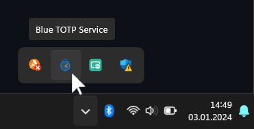

Blue TOTP Service ist eine Anwendung, die stets im Hintergrund läuft. Wenn Blue TOTP Service ausgeführt wird, erscheint in der Symbolleiste rechts unten das Icon.

Blue TOTP Service gewährt der Chrome-Erweiterung Blue TOTP Zugriff auf die Bluetooth-Schnittstelle Ihres Computers.
D.h. Sie müssen den Chrome Browser installieren und dort die Erweiterung Blue TOTP.
Außerdem sollten Sie Bluetooth auf Ihrem Computer aktivieren.
Sie können dieses Fenster schließen. Blue TOTP Service wird trotzdem weiter ausgeführt.